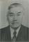

| 146,105,58,23 德 |
德育 Āk Yùk Déyù |
|||||
|---|---|---|---|---|---|---|
| 147,106,59,24 業 |
 緝業 Tīt Ngèp Jīyè Chuck Wing |
|||||
| 148,107,60,25 光 |
達光 名宗旺 Àt Göng [Düng Vòng] Dáguāng [Zōngwàng] |
自光 名宗昌 Dù Göng [Düng Chëng] Zìguāng [Zōngchāng] Fon T. |
彩光 名宗能 Tōi Göng [Düng Nãng] Cǎiguāng [Zōngnéng] Ching Dong Lum |
暢光 名宗裕 Chēng Göng [Düng Yì] Chàngguāng [Zōngyù] George |
||
| 149,108,61,26 前 |
紹文 (入繼) Sèl Mũn Shàowèn |
紹安 Sèl Ön Shào’ān |
||||
| 150,109,62,27 遠 |
耀章 Yèl Jëng Yàozhāng |
建章 Gèin Jëng Jiànzhāng |
盛章 Sèin Jëng Shèngzhāng |
|||